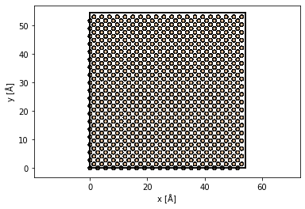
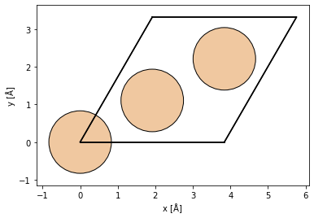

CBED quickstart
CBED quickstart#
import matplotlib.pyplot as plt
import numpy as np
from ase.build import bulk
from dask.distributed import Client
import abtem
silicon = bulk('Si', crystalstructure='diamond', cubic=True)
silicon *= (10,10,100)
abtem.show_atoms(silicon);

frozen_phonons = abtem.FrozenPhonons(silicon, 2, {'Si':.0})
potential = abtem.Potential(frozen_phonons,
gpts = 512,
projection = 'infinite',
slice_thickness = 0.5,
exit_planes = 10,
)
wave = abtem.Probe(energy=100e3, semiangle_cutoff=9.4)
wave.grid.match(potential)
wave.profile().show();

measurement = wave.multislice(potential).diffraction_patterns(max_angle=30).mean(0)
measurement.compute()
[########################################] | 100% Completed | 22.6s
CPU times: total: 4min 46s
Wall time: 22.6 s
<abtem.measure.measure.DiffractionPatterns at 0x1d7e0a70af0>
measurement.array.shape
(110, 92, 92)
fig, ax = measurement[::20].show(explode=True,
common_color_scale=True,
figsize=(14, 4),
image_grid_kwargs = {'axes_pad': .05},
)

from myst_nb import glue
fig, ax = measurement[-1].show(figsize=(4,4))
ax.axis('off')
glue("cbed_quickstart", ax.get_figure(), display=False)